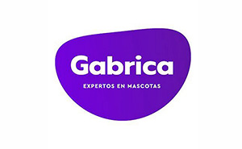

← | Nature's Variety

Esta página fue elegida por el uso de información, ofrece productos, pero también consejos útiles al momento del cuidado de los gatos. Sin embargo, no realiza un buen uso de tipografías, resulta cansadora a la vista y no es llamativa, razón de que obtuvo 60 en desirability.
Los resultados de LightHouse: destacan un largo contenido, recomienda reducir el JavaScript sin usar y minimizar el tamaño de las imágenes. Por otro lado, el fondo no tiene suficiente contraste con el resto de los colores. Además, se notaron errores de búsqueda en la consola.
Otros antecedentes
Web sobre gatos

Blog sobre mascotas